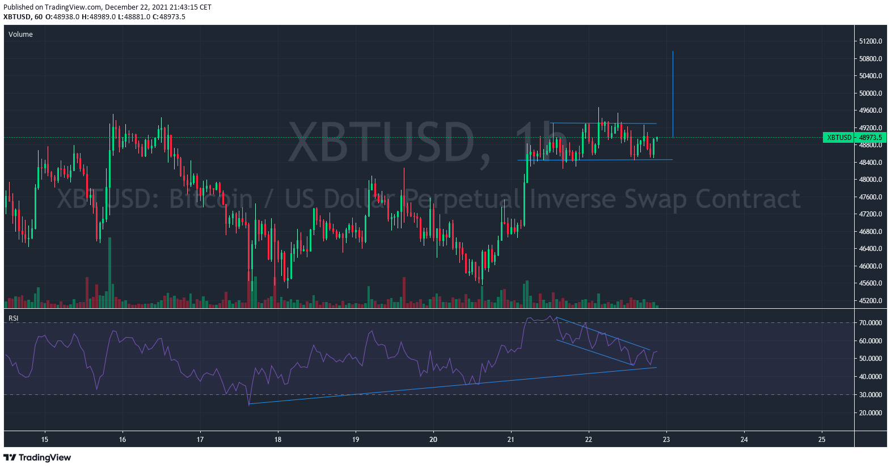

6Month markup, 6month markdown
Why we will see a markdown in the upcomming months to get a retest of the support LPS or Spring, recognized as a low volume beartrap.
Fibonacci RetracementTargets BTCUSD TOPBOTTOM=32K-16K: 0.236 (19776.0) ; 0.382 (22112) ; 0.5 (24000) ; 0.618 (25888) ; 0.786 (28756)

Entry targets

Patterng
 Tradingview